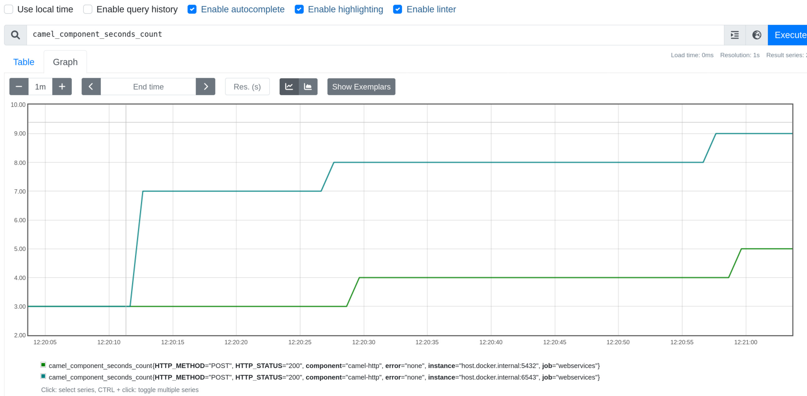

The Spring Observability Team has added native observability support for Spring Applications with Spring Framework 6 and Spring Boot 3. You can read more about the feature in the Spring blog where the Micrometer team explains what Observability and Micrometer Observation projects are. This blog post will explain how to set up Micrometer Observation and how you can add observability to your Camel projects.
Setting up the ObservationRegistry
The following snippet of code shows how to set up basic metrics and tracing capabilities for an ObservationRegistry.
// Micrometer Core JAR
import io.micrometer.core.instrument.MeterRegistry;
import io.micrometer.core.instrument.simple.SimpleMeterRegistry;
// Micrometer Observation JAR
import io.micrometer.core.instrument.observation.DefaultMeterObservationHandler;
import io.micrometer.observation.ObservationRegistry;
// Micrometer Tracing JAR
import io.micrometer.tracing.Tracer;
// [Tracing]
// Skipped the whole setup of a Micrometer Tracing tracer
// you can check the https://micrometer.io/docs/tracing docs
// for examples of Brave and OpenTelemetry Tracer setup
io.micrometer.tracing.Tracer tracer = ...; // <1>
// [Metrics]
MeterRegistry meterRegistry = new SimpleMeterRegistry(); // <2>
// Setting up ObservationRegistry
ObservationRegistry registry = ObservationRegistry.create(); // <3>
// Adding metrics support
registry.observationConfig().observationHandler(new DefaultMeterObservationHandler(meterRegistry)); // <4>
// Adding basic tracing support
registry.observationConfig().observationHandler(new DefaultTracingObservationHandler(tracer)); // <5>
- <1> - for tracing a
Traceris needed. Check the docs on more information on how to set it up - <2> - for metrics a
MeterRegistryis needed. Check the docs on more information on how to wotk with Micrometer - <3> - an
ObservationRegistryis required to createObservation. Check the docs on more information on how to set it up - <4> - to add capabilities to
ObservationRegistryone needs to add handlers. Here you have an example of a handler for metrics - <5> - Here you have an example of a handler for tracing. This is a basic sample, for more information check this part of the docs
How does Micrometer Observation work with Camel?
Apache Camel comes with an abstraction of a Tracer. It automatically creates spans for Camel Routes.
With Micrometer Observation there’s the modified concept of a Tracer to allow distingushing between high and low cardinality tags. That in turn allows to use the Tracer API to create Observations instead of spans. That allows to automatically create both traces and metrics depending on your ObservationRegistry setup.
Setting up Micrometer Observation with Camel
In order to set up Micrometer Observation with Camel you need to use the new camel-observation component and set up a MicrometerObservationTracer and register it in the CamelContext.
// Camel
CamelContext context = ...;
MicrometerObservationTracer micrometerObservationTracer = new MicrometerObservationTracer();
// Micrometer Core
MeterRegistry meterRegistry = new SimpleMeterRegistry();
// Micrometer Tracing
Tracer tracer = ...;
Propagator propagator = ...;
// Micrometer Observation setup
ObservationRegistry observationRegistry = ObservationRegistry.create();
observationRegistry.observationConfig().observationHandler(new DefaultMeterObservationHandler(meterRegistry));
observationRegistry.observationConfig().observationHandler(
new ObservationHandler.FirstMatchingCompositeObservationHandler(
new PropagatingSenderTracingObservationHandler<>(tracer, propagator),
new PropagatingReceiverTracingObservationHandler<>(tracer, propagator),
new DefaultTracingObservationHandler(tracer)
)
);
// Camel
// Setting up Micrometer Observation Tracer
micrometerObservationTracer.setObservationRegistry(observationRegistry);
micrometerObservationTracer.setTracer(tracer);
micrometerObservationTracer.init(context);
With this setup you will start creating spans and metrics for your routes.
Setting up Micrometer Observation with Camel and Spring Boot
With Spring Boot the setup is easier, because all the components come pre-configured for you. Just annotate your class with @CamelObservation and your CamelContext will automatically be setup depending on your classpath.
@SpringBootApplication
@CamelObservation
public class ClientApplication {
public static void main(String[] args) {
SpringApplication.run(ClientApplication.class, args);
}
}
Example
In this section you will see an example of running different applciations that use Camel with Micrometer, send their spans to Zipkin and expose their metrics on a Prometheus endpoint. You can find the Camel & Micrometer Observation examples here.
For Metrics let’s use Micrometer Core, for Tracing Micrometer Tracing with Brave. The application have their tracing sampling probabilities set to always sample. Check the Spring Boot docs for more information on how to configure Spring Boot with Micrometer Tracing.
The example includes three applications
- client
- service1
- service2
Where client -> service1 -> service2 using HTTP.
All of them have org.apache.camel.springboot:camel-observation-starter dependency on the classpath.
Outcome
You should get a trace view similar to this one

You will get Camel metrics. Example of one of the metrics from Prometheus
Example of plotting metrics in Grafana

Summary
In this blog post you’ve managed to learn how you can leverage the new camel-observation component that uses Micrometer Observation to make your Camel routes observable.